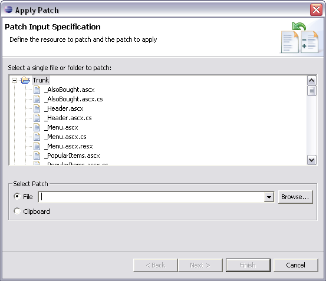

This command is initiated via the menu option.
This Eclipse command applies a Patch in unified diff format to a file or folder in your working copy.

Select the local file or folder resource to update with the Patch and indentify the incoming source of the Patch operation. If the Patch is in a file, type the name and path of the Patch file or click Browse to select the file from a local or networked folder location. Alternatively, if the Patch is on the clipboard, check the Clipboard option.
For a more detailed discussion on this topic, take a look at the CVS documentation: Working with patches.
Related Tasks
None
Related Reference